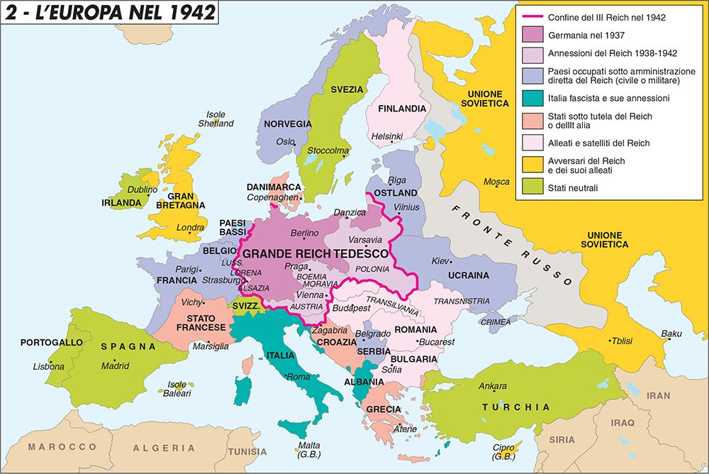
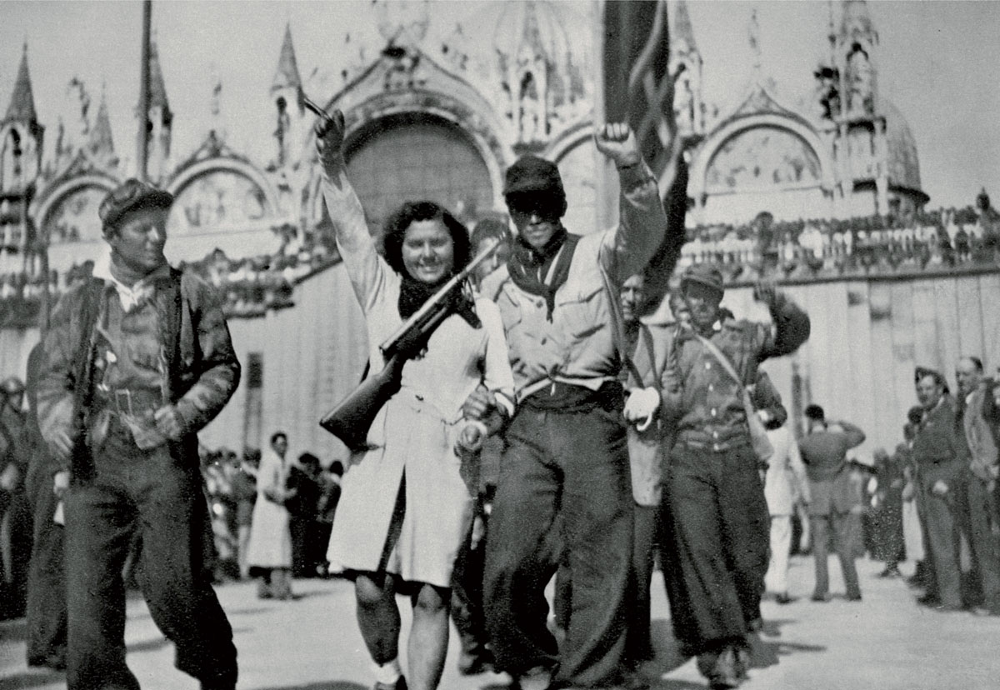
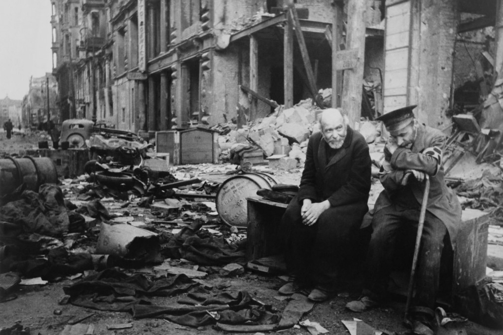

La Seconda Guerra Mondiale scoppiò il 1° settembre 1939 con l'invasione della Polonia
da parte della Germania nazista di Adolf Hitler.
Le sue radici affondano nel periodo successivo alla Prima Guerra Mondiale:
il Trattato di Versailles del 1919 aveva imposto alla Germania condizioni umilianti,
generando un profondo risentimento che Hitler seppe sfruttare politicamente.
Tra le cause principali del conflitto vi furono la crisi economica del 1929,
l'ascesa dei totalitarismi in Europa, il nazismo in Germania, il fascismo in Italia,
il franchismo in Spagna, e la politica di appeasement delle democrazie occidentali,
che avevano ceduto alle richieste di Hitler sperando di evitare un nuovo conflitto.
Le fasi del conflitto

1939-1941: le vittorie dell'Asse
Nella prima fase del conflitto la Germania ottenne rapide vittorie grazie alla
Blitzkrieg (guerra lampo): una tattica basata sull'uso combinato
di carri armati, aerei e fanteria motorizzata che permetteva di sfondare le linee
nemiche prima che potessero riorganizzarsi.
In pochi mesi caddero Polonia, Danimarca, Norvegia, Belgio, Olanda e Francia.
Nel 1940 l'Italia fascista di Mussolini entrò in guerra a fianco della Germania.
La Battaglia d'Inghilterra vide la Luftwaffe tentare di conquistare
la supremazia aerea sul canale della Manica, ma la RAF britannica resistette.
1941: la svolta globale
Il 1941 trasformò il conflitto europeo in una guerra mondiale.
A giugno Hitler lanciò l'Operazione Barbarossa, l'invasione dell'Unione
Sovietica, aprendo un fronte orientale di dimensioni enormi.
A dicembre il Giappone attaccò la base americana di Pearl Harbor,
trascinando gli Stati Uniti nel conflitto.
1942-1943: la svolta
Le battaglie di El Alamein (1942) e Stalingrado (1942-1943)
segnarono il punto di svolta della guerra.
A Stalingrado la 6ª Armata tedesca fu accerchiata e costretta alla resa:
fu la prima grande sconfitta della Wehrmacht e l'inizio del ripiegamento tedesco
sul fronte orientale.
1944-1945: la vittoria degli Alleati
Il 6 giugno 1944, il D-Day, gli Alleati sbarcarono in Normandia
aprendo il fronte occidentale.
Nel aprile 1945 Hitler si suicidò nel bunker di Berlino.
Il 7 maggio 1945 la Germania firmò la resa incondizionata.
Il 2 settembre 1945, dopo i bombardamenti atomici di Hiroshima e Nagasaki,
anche il Giappone capitolò: la guerra era finita.
L'Italia nella guerra

L'Italia entrò in guerra il 10 giugno 1940 a fianco della Germania.
Le campagne militari italiane si rivelarono disastrose: in Africa settentrionale,
in Grecia e in Russia le truppe italiane subirono pesanti sconfitte.
Il 25 luglio 1943, dopo lo sbarco alleato in Sicilia, il Gran Consiglio del Fascismo
sfiduciò Mussolini, che fu arrestato.
L'8 settembre 1943 il governo Badoglio firmò l'armistizio con gli Alleati,
ma la Germania occupò il Centro-Nord Italia e liberò Mussolini,
che fondò la Repubblica Sociale Italiana (RSI) a Salò.
Nacque così la Resistenza: partigiani di diverse formazioni politiche
combatterono contro l'occupazione nazifascista fino alla Liberazione del 25 aprile 1945.
La Shoah
Uno degli aspetti più tragici della Seconda Guerra Mondiale fu il genocidio degli ebrei
europei, noto come Shoah o Olocausto.
Il regime nazista, basandosi su un'ideologia razzista e antisemita,
pianificò lo sterminio sistematico degli ebrei d'Europa.
Già dagli anni Trenta gli ebrei erano stati progressivamente privati dei loro diritti
con le Leggi di Norimberga (1935).
Con l'inizio della guerra e l'occupazione di vasti territori, i nazisti costruirono
una rete di campi di concentramento e sterminio, Auschwitz, Treblinka, Sobibor —
dove vennero uccisi circa sei milioni di ebrei.
Anche in Italia il fascismo aveva introdotto le leggi razziali nel 1938,
e dopo l'8 settembre 1943 molti ebrei italiani furono deportati nei campi nazisti.
Le conseguenze del conflitto

La Seconda Guerra Mondiale fu il conflitto più distruttivo della storia:
si stima che causò tra i 70 e gli 85 milioni di morti, di cui la maggioranza erano civili.
Intere città europee e asiatiche furono rase al suolo.
Sul piano politico, la guerra ridisegnò completamente la mappa del mondo.
Nacquero le Nazioni Unite (1945) con l'obiettivo di mantenere la pace.
L'Europa fu divisa in due blocchi contrapposti: quello occidentale, guidato dagli
Stati Uniti, e quello orientale, sotto l'influenza dell'Unione Sovietica.
Iniziò così la Guerra Fredda, che avrebbe caratterizzato la seconda
metà del Novecento.
Per l'Italia la fine della guerra significò anche la fine del fascismo e della monarchia:
il referendum del 2 giugno 1946 istituì la Repubblica Italiana.
Perché ho scelto questo argomento
Ho scelto la Seconda Guerra Mondiale perché è uno degli eventi che ha plasmato
il mondo in cui viviamo ancora oggi: le istituzioni internazionali, i confini europei,
i valori democratici su cui si fonda la nostra Costituzione nascono tutti
dalle macerie di quel conflitto.
Studiare la Shoah in particolare mi ha fatto riflettere su come ideologie basate
sull'odio e sulla disumanizzazione dell'altro possano portare a conseguenze
catastrofiche quando incontrano il potere di uno Stato.
È una lezione che non dovrebbe mai essere dimenticata.